Proton–proton collisions
Single-inclusive parton production $a\,b\to c+X$ at NLO in the 16 tagged channel classes, for the spin average (UU) and the helicity difference of the incoming partons (LL).
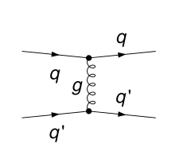
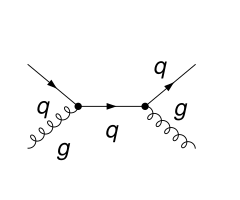
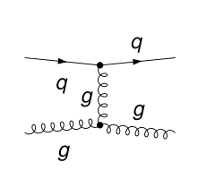
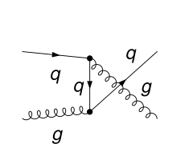
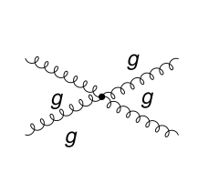
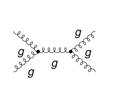
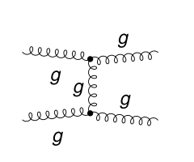

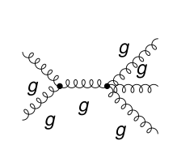

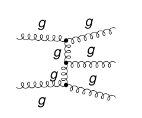
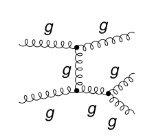
What is computed
For a measured parton of momentum $p$ the partonic cross section $\sigma = s\,E\,d\sigma/d^3p$ is written in $v = 1 + t/s$ and $w = -u/(s+t)$, with $s=(k_a+k_b)^2$, $t=(k_a-p)^2$, $u=(k_b-p)^2$ for incoming partons of momenta $k_a$, $k_b$ and $0 < v,w < 1$:
$$\sigma = \sigma_{\rm Born}\,\delta(1-w) + P(v,w)\,c_{\rm reg}(v,w) + P(v,1)\big[c_{0}(v)\,\big[\tfrac{1}{1-w}\big]_+ + c_{1}(v)\,\big[\tfrac{\ln(1-w)}{1-w}\big]_+ + c_{\delta}(v)\,\delta(1-w)\big],$$Here $\sigma_{\rm Born}$ is the lowest-order term, and $c_{\rm reg}$, $c_0$, $c_1$, $c_\delta$ are the coefficients $R$, $B$, $C$, $A$ of the paper, with $P$ its normalization $\mathcal N$. The scales enter through $L_R=\ln(\mu_R^2/s)$, $L_F=\ln(\mu_F^2/s)$ for the incoming partons and $L_{FF}=\ln(\mu_{FF}^2/s)$ for the fragmenting one ($\mu_{FF}$ is the $\mu_F'$ of the paper).
Here $P = \alpha_s^3/(\pi s v w)$. The fragmenting parton $c$ is unpolarized; the helicity difference is $\tfrac12[\sigma(++)-\sigma(+-)]$, in the HVBM scheme with the finite term $-(\alpha_s/2\pi)\Delta f_{qq}\otimes\sigma_{LL}^{(0)}$ on each polarized incoming quark or antiquark (see Method). Classes 2, 4, 7, 8, 9, 10 start at order $\alpha_s^3$ (no Born term).
The calculation
Step 1 generates the Born, virtual (one-loop) and real-emission diagrams with FeynArts. Step 2 squares them in the three routes; for $g\,g\to g\,g\,g$ (25 diagrams, 325 products), every amplitude is simplified once with the transversality conditions of the gluon polarizations, color is separated and each color network evaluated once, only the products $i\le j$ are formed, gluon polarization sums are applied one gluon at a time, and the products run in parallel. Step 3 maps the real emission onto six reverse-unitarity families and the virtual graphs onto three box families, reduces them with Kira, and evaluates the masters with SubTropica. Steps 4 and 5 expand at threshold, renormalize, subtract the collinear singularities of both incoming partons and the fragmenting one, and compare with the reference codes.
Checks
| Class | Process | UU vs Aversa et al. | LL vs Jäger et al. | FeynCalc = FORM = Tracer |
|---|---|---|---|---|
| 1 | $q\,q'\to q$ | agrees | agrees | agree (2 random exact points) |
| 2 | $q\,q'\to g$ | agrees | agrees | agree (2 random exact points) |
| 3 | $q\,\bar q'\to q$ | agrees | agrees | agree (2 random exact points) |
| 4 | $q\,\bar q'\to g$ | agrees | agrees | agree (2 random exact points) |
| 5 | $q\,\bar q\to q'$ | agrees | agrees | agree (2 random exact points) |
| 6 | $q\,q\to q$ | agrees | agrees | agree (2 random exact points) |
| 7 | $q\,q\to g$ | agrees | agrees | agree (2 random exact points) |
| 8 | $q\,g\to q'$ | agrees | agrees | agree (2 random exact points) |
| 9 | $q\,g\to \bar q'$ | agrees | agrees | agree (2 random exact points) |
| 10 | $q\,g\to \bar q$ | agrees | agrees | agree (2 random exact points) |
| 11 | $q\,\bar q\to q$ | agrees | agrees | agree (2 random exact points) |
| 12 | $q\,\bar q\to g$ | agrees | agrees | agree (2 random exact points) |
| 13 | $q\,g\to q$ | agrees | agrees | agree (2 random exact points) |
| 14 | $q\,g\to g$ | agrees | agrees | agree (2 random exact points) |
| 15 | $g\,g\to g$ | agrees | agrees | agree (2 random exact points) |
| 16 | $g\,g\to q$ | agrees | agrees | agree (2 random exact points) |
The reference codes were evaluated at nine points per class; all four coefficients agree to the precision of the double-precision reference values ($10^{-15}$ to $2\cdot10^{-7}$). Inside the notebooks: double and single poles cancel, the Born squares equal the Born table, for selected classes the real-emission squares do not depend on the gluon reference vectors, and the squares of the three routes agree (exact arithmetic at two random rational points).
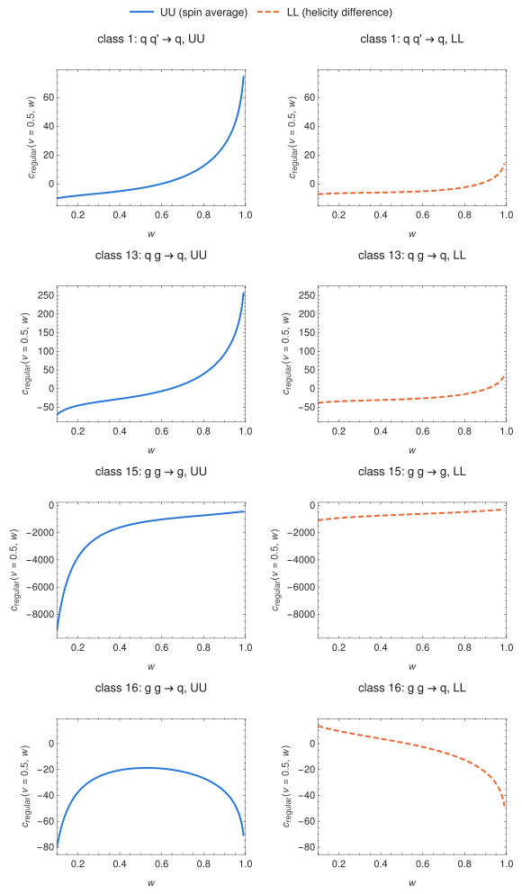
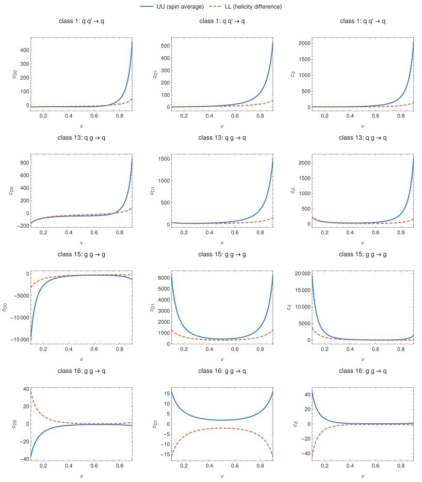
Files
Notebooks: Processes/Hadronic. Coefficients: Coefficients/ProtonProton.wl.
python3 Coefficients/evaluate.py pp 13 LL 0.3 0.2 --digits 30